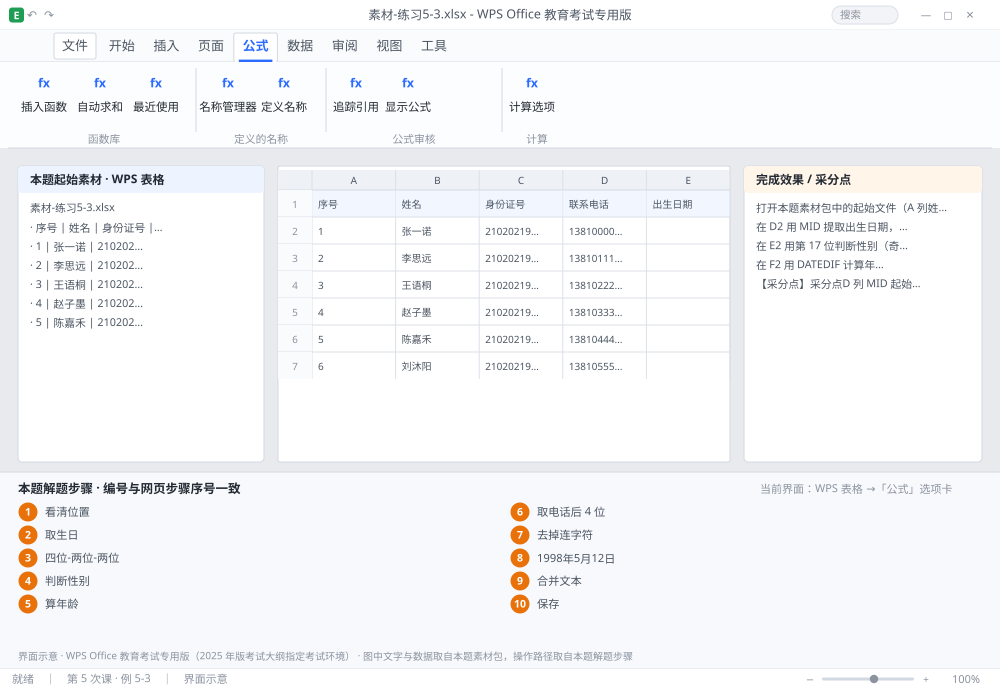

完成比对文档 · 例 5-3
18 位身份证提取：生日 + 性别 + 年龄 + 电话拆分 + 文本格式化 ｜ 第 5 次课 / WPS 表格 ｜ 网页：实操-表格2.html ｜ 考试环境：WPS Office 教育考试专用版（2025 年版考试大纲指定考试环境）
用途 本页按修订后的题目要求与解题步骤生成，是交卷自查的结果基准：
逐项列出每一步应出现的可复核结果，配合模拟操作截图与解题结果文件使用。
它不是素材包的一部分，不会预置答案动作；起始素材仍从本题素材包下载。
一、本题起始素材包
目录：练习素材/练习5-3-身份证与文本函数/ ｜
下载包：练习素材/下载/练习5-3-身份证与文本函数.zip
二、题目要求
- 打开本题素材包中的起始文件（A 列姓名、B 列 18 位身份证号、C 列联系电话，如 0411-84711234）。
- 在 D2 用 MID 提取出生日期，显示为「1998-05-12」，下拉。
- 在 E2 用第 17 位判断性别（奇数为男），下拉。
- 在 F2 用 DATEDIF 计算年龄（周岁），下拉。
- 在 G2 用 RIGHT 取电话后 4 位，下拉。
- 在 H2 用 SUBSTITUTE 去掉电话中的「-」，下拉。
- 在 I2 用 TEXT 把 D2 显示为「1998年5月12日」。
- 在 J2 用 & 连接符 把姓名与电话合并为「姓名：电话」。
- 保存为 学号-姓名-练习5-3.xlsx。
三、解题步骤（编号与下方核对表、截图编号一致）
- 看清位置。18 位身份证：第 1~6 位地区码，第 7~14 位出生日期，第 15~17 位顺序码（第 17 位奇男偶女），第 18 位校验码。
- 取生日。D2 输入 =MID(B2,7,8) → 得到 19980512（文本）。
- 转成日期样式。把 D2 改为 =TEXT(MID(B2,7,8),"0000-00-00") → 得到 1998-05-12。0000-00-00 是「四位-两位-两位」的占位模板。
- 判断性别。E2 输入 =IF(MOD(MID(B2,17,1),2)=1,"男","女") → 下拉。读法：取第 17 位 → 除以 2 取余 → 余 1 为男。
- 算年龄。F2 输入 =DATEDIF(TEXT(MID(B2,7,8),"0000-00-00"),TODAY(),"y") → 下拉。DATEDIF 三个参数：起始日期、结束日期、单位（"y" 整年数）。
- 取电话后 4 位。G2 输入 =RIGHT(C2,4) → 下拉。
- 去掉连字符。H2 输入 =SUBSTITUTE(C2,"-","") → 下拉（得到 041184711234，前导 0 会丢，若需保留可外套 TEXT）。
- 格式化显示。I2 输入 =TEXT(D2,"yyyy年m月d日") → 显示「1998年5月12日」。注意 D2 已是文本日期，TEXT 会先识别再格式化；若 D2 是真正日期序列值，效果相同。
- 合并文本。J2 输入 =A2&"："&C2 → 得到「王雨桐：0411-84711234」。用 & 把单元格与分隔符串起来，分隔符必须放在英文双引号里。
- 保存。Ctrl+S。
四、完成效果 / 采分点
采分点D 列 MID 起始位 7、长度 8 且显示为 1998-05-12 · E 列性别判断取第 17 位且奇男偶女 · F 列 DATEDIF 用 "y" 且结果正确 · G 列 RIGHT 取 4 位 · H 列 SUBSTITUTE 去掉全部「-」 · I 列 TEXT 格式正确 · J 列连接符与分隔符正确
五、逐项完成核对表
| 步骤 | 关键操作路径 | 应出现的结果（可复核） |
|---|
| 1 | 看清位置 | 看清位置 |
| 2 | 取生日 | D2、=MID(、B2 |
| 3 | 转成日期样式 | D2、=TEXT(、B2、「四位-两位-两位」 |
| 4 | 判断性别 | E2、=IF(、B2 |
| 5 | 算年龄 | F2、=DATEDIF(、B2 |
| 6 | 取电话后 4 位 | G2、=RIGHT(、C2 |
| 7 | 去掉连字符 | H2、=SUBSTITUTE(、C2 |
| 8 | 格式化显示 | I2、=TEXT(、D2、「1998年5月12日」 |
| 9 | 合并文本 | J2、A2、C2 |
| 10 | 保存 | 保存 |
六、模拟操作截图

界面示意 · WPS Office 教育考试专用版 · 橙色编号与本题解题步骤序号一致；
图中文字与数据取自本题素材包，功能入口取自本题解题步骤。
核对方法：按网页解题步骤完成并另存自己的成稿后，逐行比对本表第 3 列的
参数、公式、区域、文件名与对象数量；再对照网页「完成效果 / 采分点」检查版式是否一致。